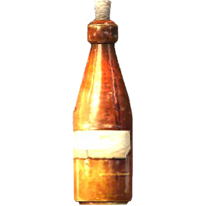

Vilod's Juniper Berry Mead Recipe

About this Recipe
You'll be a lot happier and a lot warmer with some mead in your belly! May your thoughts be of home while you enjoy this nostalgic brew.
Ingredients
- 2 cups Honey
- 6 to 8 cups Spring Water
- 2 Tbsp crushed Juniper Berries
- 2 tsp dried Yarrow Flowers
- 1 Tbsp dried Lavender Flowers
- Active Brewer's Yeast
Instructions
- Pour the honey into a clean 2-3 litre carboy or glass jug. Bring 4 cups of water to a boil, then pour the boiling water over the honey and stir until the honey has dissolved.
- Add the juniper berries, yarrow, and lavender, then top off with the remaining water, leaving a little space of air at the top.
- Let this mixture cool to room temperature, then add the yeast. Fix a brewing airlock to the top of the jug and set in a moderately warm place to ferment.
- After a day or two, you should see tiny bubbles rising to the surface. After about 2 weeks, the mead can be consumed, although it will still be a bit cloudy.
- If you would like to age the mead, leave it to ferment for several months until the sediment drops and the mead becomes clear. Feel free to back-sweeten with some honey.
Credit to UESP for the mead image, licensed under the Creative Commons by-sa license.
Back to homepage